ムカサリ絵馬2/山形県
ムカサリ絵馬との衝撃的な出合いから1年。
再びムカサリ絵馬を求めて最上三十三観音の幾つかの寺をまわってきた。
ムカサリ絵馬とは何じゃい？という方はこちらへ。
尾花沢観音/山形県尾花沢市
尾花沢市街にある最上三十三観音の25番札所。松尾芭蕉が7泊程滞在したのが御自慢の寺。
涼しさを我宿にしてねまる也
の句を詠んだそうな。
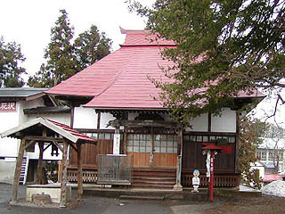 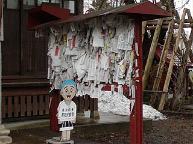
で、観音堂はというと巡礼札を直接お堂に貼るのではなく掲示板のようなところに貼るタイプ。
この掲示板に貼るタイプはお堂を傷めないようにという配慮から採用されているシステムで比較的新しいお堂に良く見られる。
最上三十三観音を全部見た訳ではないので迂闊な事は言えないが、このような寺はムカサリ係数が少ないような気がする。
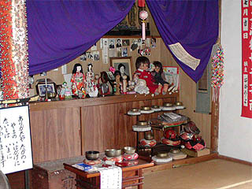
やはり堂内にはやはりムカサリ絵馬はなかった。
幾つかの人形と遺影が奉納されているだけだった。
残念、と思いつつ山門を見ると凄い仁王様が。
東北のお寺には時々ひっくり返るような強烈な仁王像が山門に納まっている事があるが、ここのもまさにソレ。
変顔キングの仁王像である。 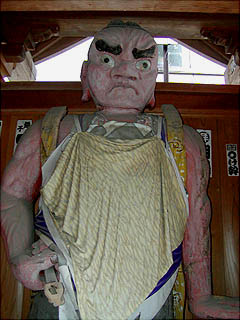 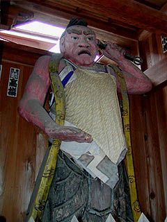
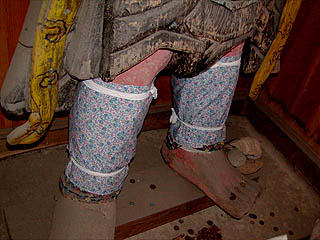
足元にはレッグウォーマー。防寒対策も万全です。
それにしても仁王様にまでもヨダレ掛け。
お地蔵さんだけでなくとにかく仏像を見たら何かせずにはいられない気質なんでしょうか？
ムカサリ絵馬はなかったがこの仁王様が見れただけでも充分来た甲斐があったってもんよ。
五十沢観音/山形県尾花沢市
最上三十三観音、21番の五十沢（いずさわ）観音は山村の外れの小高い山の上にある。
入口には何故か赤い鳥居。東北では観音堂の参道にこうして鳥居があるのをたまに見かける。
別に神社があるわけでもないのに。ミステリーだ。
で、その鳥居の先は長い階段が続く。
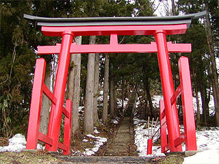
長い石段を登り切るとそこには小さなお堂がぽつんとあった。
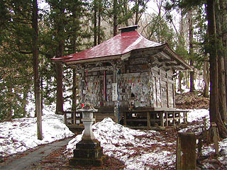 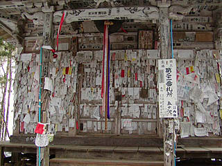
その正面には巡礼札がびっっっっっっっっっしりと貼付けてあった。
先程の尾花沢観音と比較するわけじゃないですけどやっぱりこのお札直貼り系オールドスクールの方が人々の願いや思いが目に見えるカタチで具現化している感じがして私は好きです。
勿論「お堂がハリガミだらけになっちゃってしょうがねえや」というお寺側のロジックもよーく分かりますが。
さて、札まみれの扉を少し開けてみる。
おっと。
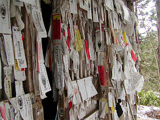
扉の合わせにまで札が貼ってあるじゃないですか〜！
で、中を覗き込んでみると・・・
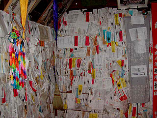
中も巡礼札で一杯でした。
ところが肝心のムカサリ絵馬は見当たらず、幾つかの遺影がある程度だった。
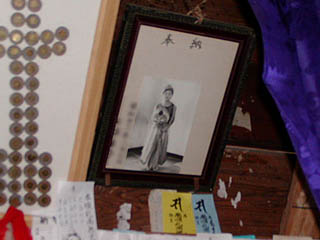
お堂の外側の貼り札の密度からしてムカサリ指数は120パーセントと踏んだのだが・・・
ムカサリ絵馬が奉納される寺の条件とは一体何なんでしょう？
もしかしたら村山地方にしか存在しないのだろうか？
御存じの方、是非教えて下さい。
小松沢観音/山形県村山市
結局ムカサリ絵馬に出会う事なく、小松沢観音へ。
ここは前回紹介した暫定ムカサリキングの黒鳥観音の次の20番目の札所で、場所も同じ村山市内なので大いに期待しつつ小松沢観音へと向かう、向かう。
向かう・・・のだが、中々辿り着けない。カーナビや地図にも出ていないし、四国の札所じゃないから途中の道案内などありゃしない。頼りは先程聞いた地元のおねいちゃんの「この先、曲って真直ぐです〜」の一言だけ。ホントにこの道で良いんだろうかと半信半疑のまま進む事、数キロ。段々道は狭く急になり、山道になって来て、かなり不安になった頃、やっと小松沢観音に到着した。おねいちゃん、ありがとう。真直ぐがこんな距離だとは思わなかったぜ。下調べは大事ですね。
後で調べてみるとこの小松沢観音、最上三十三観音の中でも最も辺鄙なところにあるという。
確かに人外魔境というか冥界の地である。人はいそうもないが熊やあの世の方々は出てきそうな雰囲気ではある。
あの世の方々はともかく、熊は怖いので車からお堂までは歌など歌って歩いてみました。
傍から見たらかなり間抜けな光景だったと思う。
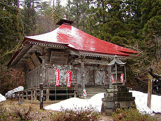 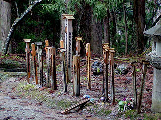
で、巨大な草鞋を掲げる山門を潜ると観音堂が見えて来た。
まだ周辺には雪が残っており、冬眠明けのハラペコ熊さんがどこから飛び出して来るやもしれずかなり腰の引けた体勢で後生車を廻したりする。
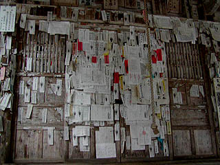
観音堂の正面には巡礼札がビッシリ。いいぞ、いいぞ。
お邪魔しま〜す・・・
・・・中はかなり暗い。ただでさえ木に囲まれて日当たりの悪いところなのにこの日は雨まじりの曇り空、しかも開口部がすべて札で埋め尽くされ塞がっているからだ。
漸く目が慣れてくると中にも札や遺影がビッシリ。
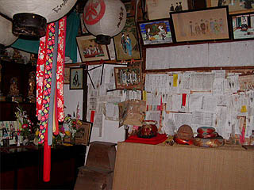 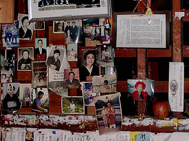
そして振り返れば・・・
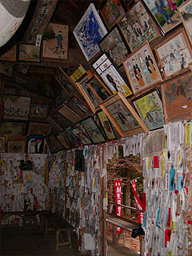
おおお、やっと出会えました。ムカサリ絵馬！
欄間の上にたくさんあるではないか！
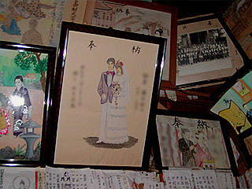
しかもこのお堂は天井がなく小屋組が剥き出しなのだが、その梁にもムカサリ絵馬が掲げられている。
黒鳥観音に匹敵する程の密度である。
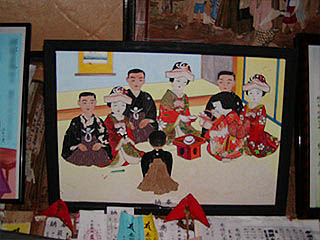
上のムカサリ絵馬は押し絵とでもいうのだろうか紙に厚みを持たせたものなので平面なれど立体的である。
この手法のムカサリ絵馬は初めて見た。良く見れば他にも幾つかあるようだ。「・・・ようだ」と記したのはホントに堂内が暗くて肉眼では良く見えないんですよ。カメラだってファインダー覗いても全然見えないから適当にフラッシュ焚いて撮ったのばっかりなんです。マグライト持ってけばよかった。
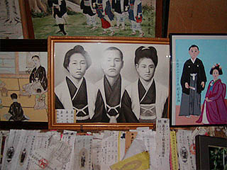 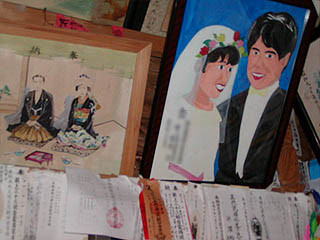
今回のベスト絵馬。
土手に立ち将来を仰ぎ見るかのような希望に満ちあふれたような爽やかな絵馬。しかし上には戦死と記されている。
画風と死因がマッチしない、何ともやりきれない絵馬であった。あの世でこんな爽やかな気持ちでいれたらいいですね。
今回のムカサリ探訪は一カ所だけに留まったがこの絵馬が見られてよかったよ。
ムカサリ絵馬を見ていつも感じるのは、プロの絵馬師のものでない、いわゆる素人が描いた絵の様式や形式を吹っ飛ばすチカラだ。
勿論描いた当人がそんな事を意識しているはずもなく、亡くなったわが子のためにただただ一生懸命描いているのだろうが、その真摯な姿勢がこのようなオリジナリティ溢れる素晴らしい絵画が誕生する要素になっているのは間違いない。
そこには上手く描いてやろうとかカッコよく描いてやろうというスケベ心の一切ない純粋な供養の気持ちがストレートに表れた絵がある。
これこそ絵画が本来持っているチカラなのではないだろうか。
単なる珍しい習俗というだけでなく日本の新しい民画（フォークアート）の傑作の宝庫として、ムカサリ絵馬が掲げられているお堂は貴重な美術館ともいえるのではなかろうか。
変な文化財保護とかしないでもこのまま存続していきそうな力強さが頼もしい。
まだまだムカサリ絵馬を追う旅は続きそうな気がするぞ。
〜おまけ〜
花笠地蔵/山形県尾花沢市
尾花沢の国道沿いのドライブインの一画に大きなお地蔵さんが立っている。
その名を花笠地蔵という。
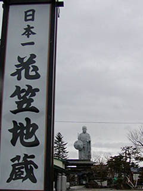 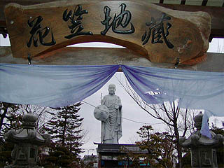
大きさは10メートル位。日本一と銘打って入るが、何が日本一なのかは不明。
「花笠地蔵」として、だったら文句なしの日本一ですね。ってゆうか日本唯一といってもいいのでは。
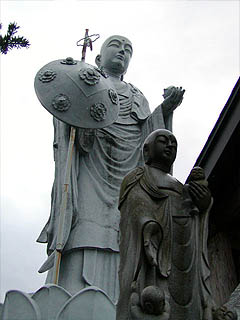
小さな地蔵が幾つか奉納されていていたが少し荒れた感じだった。
2004.4.
珍寺大道場 HOME